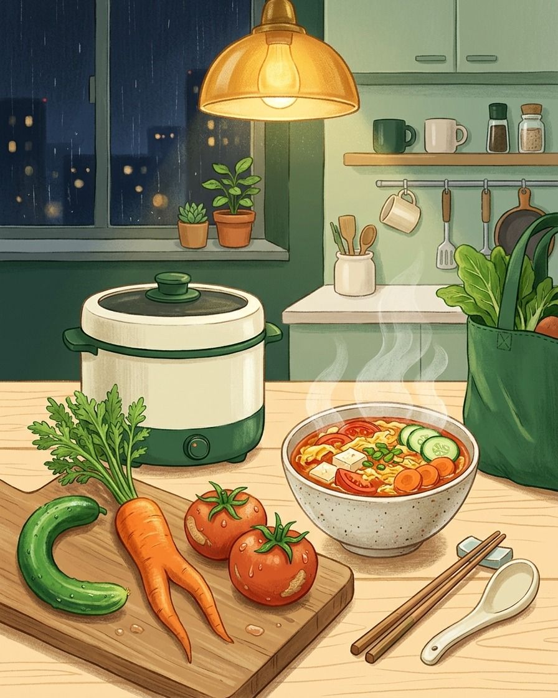

380 萬噸+
每分鐘浪費 7.2 噸食物
台灣每年丟棄超過 380 萬噸格外蔬果，相當於每分鐘浪費 7.2 噸食物。這些食材並非腐壞，只是因為彎曲、過大或表皮微瑕而未能進入主流通路。
SDG 12 責任消費與生產｜Target 12.3 格外品剩食搶救
專為大學外宿生打造的惜食生活提案：外食昂貴、月底荷包吃緊，不代表必須犧牲健康。選購營養 100% 保留的「格外品蔬果」，用銅板價煮出暖心宵夜，把被忽視的好食材變成餐桌上的美味驚喜。

DATA TRUTH
當我們在超市挑選外觀筆直、大小一致的蔬果時，大量新鮮安全的農產品正因「長相不合規格」而在產地與批發端被無聲淘汰。
380 萬噸+
台灣每年丟棄超過 380 萬噸格外蔬果，相當於每分鐘浪費 7.2 噸食物。這些食材並非腐壞，只是因為彎曲、過大或表皮微瑕而未能進入主流通路。
100% 保留
僅因外貌微疵被棄置的格外品，其維生素 C 與微量元素與頂級品完全相同，營養價值 100% 保留，切開下鍋後的口感與香氣毫無差異。
省 $1,200 / 月
每位大學外宿生每年因蔬果昂貴減少攝取，但若採購格外品，每月可省下 $1,200 元並減少 18 公斤碳排，同時拯救自己的健康與荷包。
SUSTAINABLE SOLUTION
不需複雜廚藝，只要改變三個小習慣，就能在租屋處用快煮鍋完成平價低碳的格外品料理。
理解蔬果的自然生長差異，分辨「表皮微瑕、形狀彎曲的格外品」與「劣質腐敗品」的不同，不再以單一外觀標準決定食材價值。
優先選購校園周邊惜食攤位、合作小農直送或超市格外品專區的蔬果，以低於市價 3 至 5 折的預算補足每日膳食纖維。
與室友共同分購格外品蔬果箱，用快煮鍋完成一鍋到底料理，並將你的「醜蔬果神仙料理」分享至社群，帶動更多外宿同儕加入。
不知道彎曲小黃瓜與微瑕番茄怎麼煮？我們整理了零失敗快煮鍋食譜！
代表人物：阿豪（20 歲，大學外宿生）
平時課業與打工忙碌，三餐總依賴便當與超商微波食品。每次走進超市看到高昂的漂亮蔬果總下不了手，月底荷包緊張時只能靠泡麵果腹，卻又擔心營養不均與體力下滑。
完成連署即可立即解鎖合作小農專屬 85 折優惠碼與免運湊團資格。
SOCIAL PROOF
同儕響應與惜食承諾牆
目前已有
1,248 人已加入
《格外美好》外宿惜食採購行動，共同減少超過 22,464 公斤碳排放
「以前去超市總覺得歪掉的小黃瓜怪怪的，自從跟室友一起訂格外品蔬果箱後，切丁煮咖哩根本吃不出差別，這個月伙食費直接省下一千多塊！」
「在租屋處用快煮鍋煮微瑕牛番茄豆腐湯超方便，維生素 C 一點都沒少，熬夜趕專題時終於不用再吃油膩泡麵了！」
「知道台灣每年丟掉 380 萬噸格外蔬果真的超震撼。現在每週固定跟宿舍樓友湊單買小農格外品，省錢又能幫產地減廢，很有成就感！」